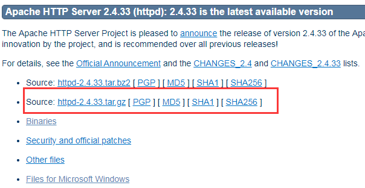
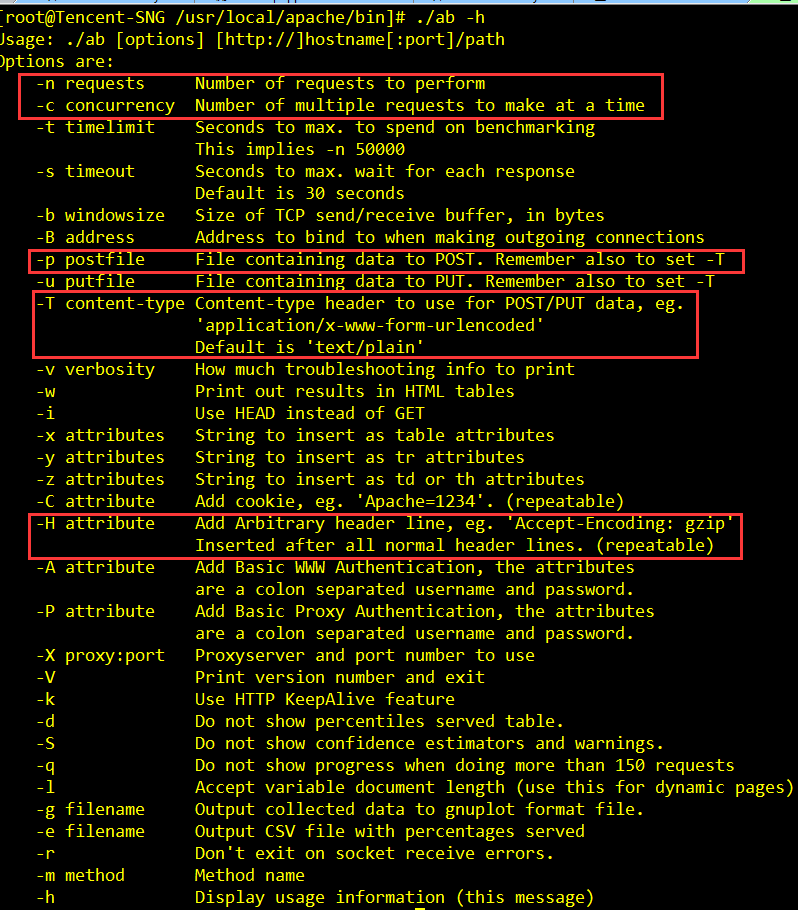

压测工具 - Apache ab
Apache ab全称ApacheBench，有Apache提供的一个轻量级压测工具，windows、linux下均有对应版本。
安装方法
windows
到Apache Http Server官网下载集成软件包 XAMPP 或 WampServer。安装完成后，在%installPath%/apache/bin找到ab.exe。

linux
到Apache Http Server官网下载下载httpd-{version}.tar.gz包进行源码安装。安装完毕后在%installPath%/apache/bin找到ab。

使用方法
以linux下ab为例，windows使用同理。
ab命令参数

上图红框标记为ab常用参数，含义如下：
-n请求总数。-c并发数。-H添加任意Http请求头，包括cookie、user agent等，可添加多个。-p当压测post请求时，指定post数据文件路径。-T当压测post请求时，指定post数据格式，application/json或application/x-www-form-urlencoded。
实战使用
压测对象为鹅漫U品页面和cgi。
样例1 - 压测GET请求
./ab -c 800 -n 10000 -k -H "Cookie: uin=o0502383519; skey=@P1crrtHu7;" -H "Accept-Encoding: gzip, deflate" "http://mall.vip.qq.com/?debug=1&mqqRelogin=false"
http://mall.vip.qq.com/?debug=1&mqqRelogin=false 页面从cookie中取出参数校验用户登录态，故通过-H参数指定用户cookie。另一-H参数则指定了客户端可接收编码格式gzip，目的让Server对响应数据进行压缩。-k即在http请求头插入Connection: keep-alive。命令共模拟800个用户同时请求页面10000次。
样例2 - 压测POST请求
./ab -T "application/json;charset=UTF-8" -H "User-Agent: Mozilla/5.0 (iPhone; CPU iPhone OS 9_1 like Mac OS X) AppleWebKit/601.1.46 (KHTML, like Gecko) Version/4.0 Chrome/37.0.0.0 Mobile MQQBrowser/6.8 TBS/036823 Safari/537.36 V1_AND_SQ_6.5.3_398_YYB_D QQ/6.5.3.2855 NetType/WIFI WebP/0.3.0 Pixel/1080" -p post.json -c 800 -n 10000 "http://uapi.vip.qq.com/Api/api.brand.condition"
通过-T参数指定了post请求参数编码格式为application/json，-p指定post请求参数文件路径post.json，post.json文件内容如下。
{"brand_id": 16, "page": 1, "per_page": 10}